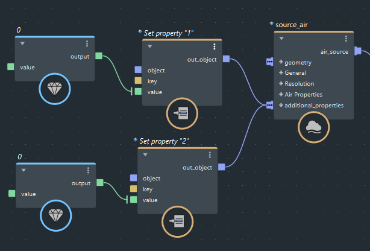

可以向 Aero 以及粒子模拟添加自定义特性，其中包括 MPM 颗粒效果。这些自定义特性可用于各种目的，例如，您可以使用影响物调整这些特性，然后使用这些特性控制着色特性。

将 set_property 节点添加到图表中。
将其 key 设置为所需的特性名称。
vary_source_property 和其他情况中使用特性的确切名称。将其 value 设置为所需的初始值。
float 的类型，请连接所需类型的 value 节点。请参见添加 value 节点。将 set_property 节点的输出连接到源节点的 additional_properties 端口。
可以将任意数量的 set_property 节点连接到 source 节点。